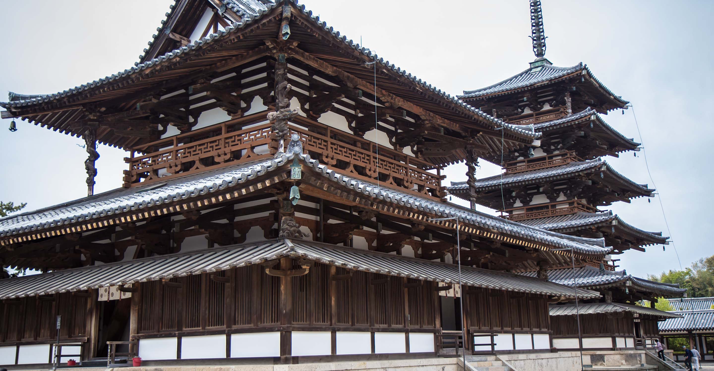
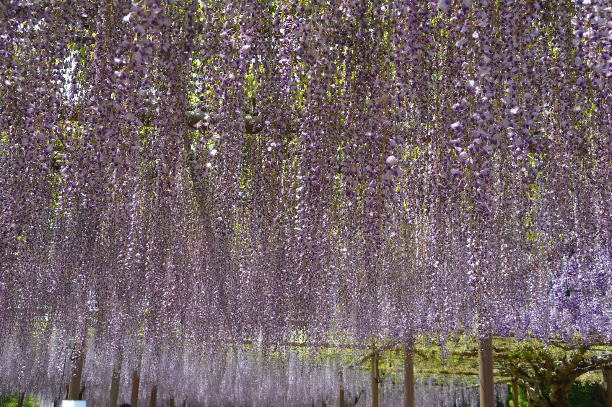

Aichi Prefecture, which is located around the middle of Japan and has a mild climate,
has long served as a crossroads between the cultures of
eastern and western Japan. It is naturally blessed by bountiful seas and lushly green mountains,
and culturally blessed by the numerous relics,
ruins, and other historical assets that have survived to the present day.
Travelers in Aichi Prefecture will also encounter a wealth of distinctive folkcrafts,
festivals, and foods.
(Source: Aichi official Website)
Horyuji Temple
Korankei Gorge
Wisteria at Konan
